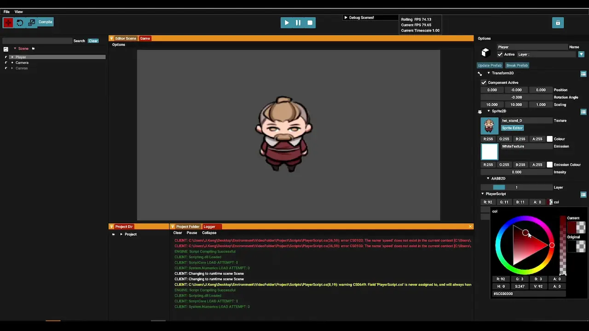
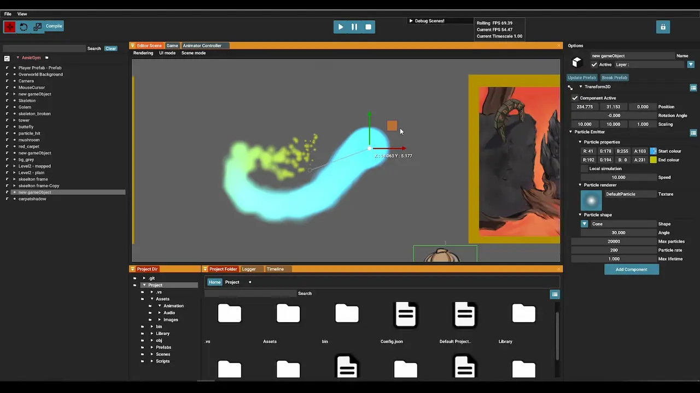
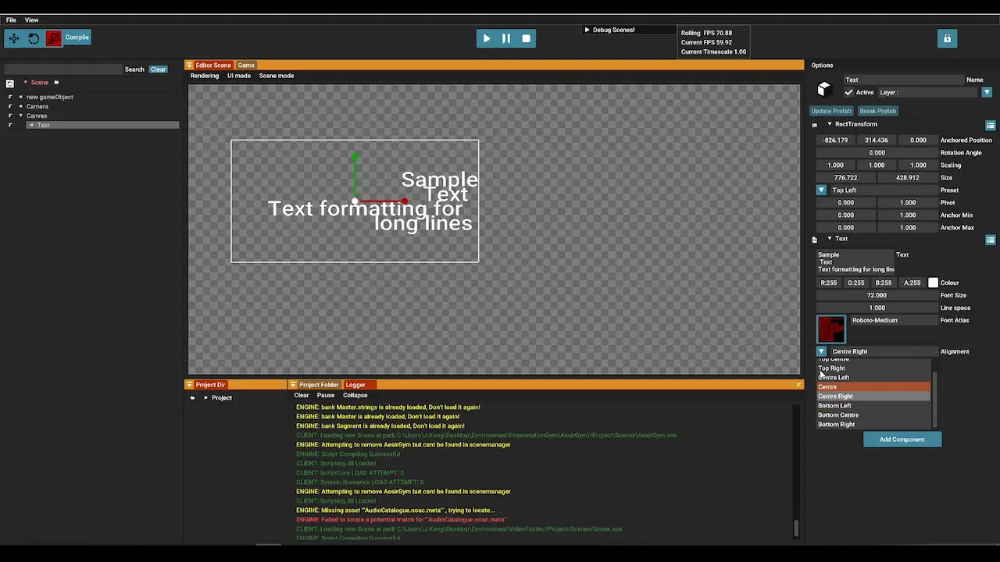
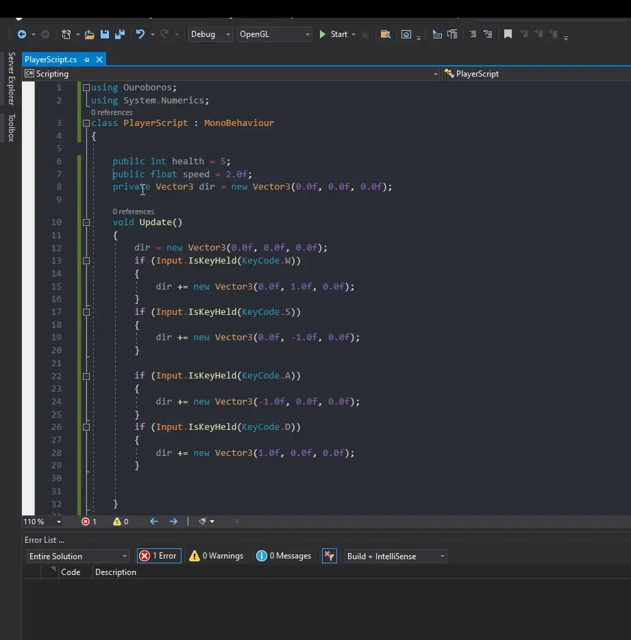

The Ouroboros engine was developed by a team of five tech students with a focus on usability and performance. The engine was designed to support the goals of our GAM200 vision and was optimized for a seamless user experience.